CS146S · 9/29 高级提示与复杂代码库的上下文工程：用 RePPIT 给一个陌生代码库加功能
这一讲的主张是：vibe coding 能走一段路，但在几百上千个文件、上百万行代码的代码库里，上下文窗口会成为硬约束，需要更有章法的流程。讲者用 RePPIT（Research、Propose、Plan、Implement、Test）现场给一个 vibe coding 出来的 Mint 克隆加「按类别的消费趋势线」，逐步展示每一步背后的 skill 提示词，并回答什么时候清上下文、什么时候用强模型；最后给出「任务越难、上下文工程越重」的分级图，以及 Superpowers、OpenSpec 两个同类框架。页面依据课件 18 页与网站讲课实录。
课件（Google Slides） 讲课实录 课程网站 本页导读约 30 分钟
说明：这份实录只在开头有一个时间戳（01:22），没有逐分钟时间戳，所以本页按原段落顺序把实录合并成约 150 词一段，引用写作「实录第 N 段」。讲者先说课程申请周日截止，还没收到回复的大概不能拿学分，但欢迎旁听；这周要记下一个来自 credit partner 的工作坊。合作伙伴分三类：客座讲者、提供算力额度的、OSS 合作伙伴。Factory 是给额度的公司之一，讲者说它最近融资后估值约 50 亿美元。

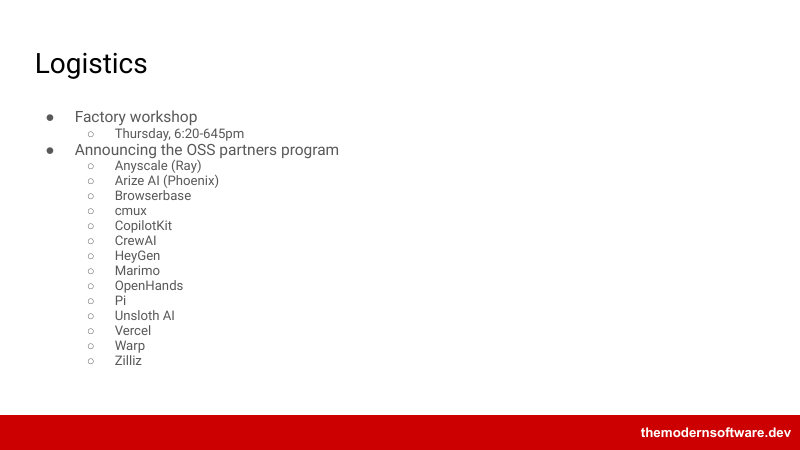
Factory 的 CTO Eno 之后会来做讲座。因为提供了额度，Factory 想让大家都上手它的平台：周四 Ashley 来做工作坊，在正常上课时间之外、不强制参加；正课可能提前几分钟结束，之后留 20 到 25 分钟给她。
今天正式宣布 OSS 合作伙伴计划，为贡献开源项目，这是作业的一部分。有一张表收集你用来联络的邮箱、Discord 和 Slack，因为各家社区用的渠道不同；之后按大家的排序做类似 stable matching 的分配。学期中会换一次，所以每人至少跟两个合作伙伴，经历上手多个大型代码库的过程，目标是至少 4 次贡献，截止日期在课表里。
讲者简单介绍几家：Anyscale 做 ML 推理与训练，Arize 是可观测性平台，Browserbase 做浏览器 agent，cmux 是流行的开发工具，CopilotKit 做 AG-UI 前端 agent 协议，CrewAI 是企业用的 agent 编排平台；Marimo 出自 Stanford，相当于下一代 Jupyter notebook；OpenHands 是走开源路线的编码 agent；Pi 是另一个编码 agent，讲者认为它驱动着 OpenClaw；Unsloth 做开源权重模型的微调；Vercel 是 web 应用平台。HeyGen 的类型实录写得不清楚，未确认。每家至少有一位专门的维护者负责审 PR、作为联络人。
有的合作伙伴还想做双周 office hours 或来现场见面，讲者说 cmux 的人下周会来，大概会展示他怎样并行驱动几十个 agent。先填排序，来访时间和联络方式之后再通知，多半是加入他们的 Slack 或 Discord 专门频道。
最后两家：Warp 卖 software factory，允许学生来搭它的 software factory；Zilliz 做向量数据库。然后进入今天的主题：复杂代码库的高级提示与上下文工程。讲者说课程的目标之一，是让理论扎实的优秀开发者拿到在真实工作里成功的工具，今天讲的很多是你在业界工作中会遇到或用到的。
并非所有 token 都一样有用
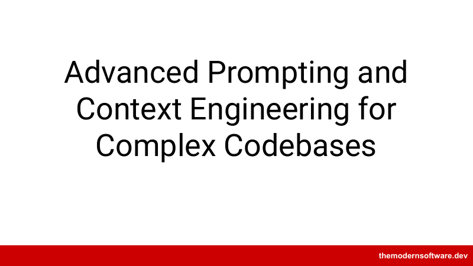
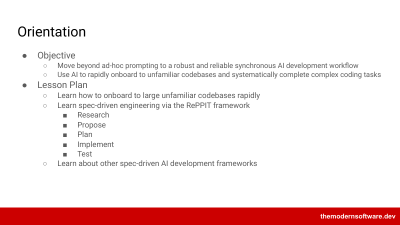
讲者说最需要学会的，是在远超几个本地文件的规模上驾驭编码 agent：几百上千个文件、上百万行代码，类似 Google 的规模。到了这个规模就会撞上上下文窗口的固有限制。有的 agent 号称 100 万 token，但并非所有 token 都一样，在性能下降之前能真正用来干活的不到这么多，所以面对复杂软件时必须更有心思。今天会讲上手陌生代码库和解决特别复杂的编码任务，主要讲一个 spec 驱动工程的框架，再点几个其他框架的名字；讲者认为 spec 驱动大概是业界解决较难任务的事实标准。
要解决难代码库里的难题，得比 vibe coding 再往上一层
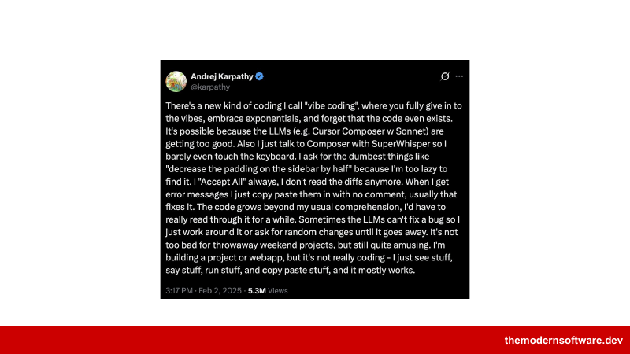
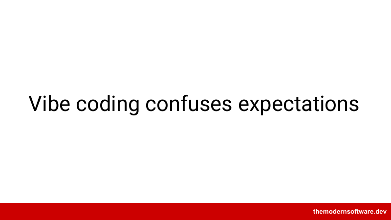
讲者说今天聚焦 RePPIT 五步（实录里写作 REPIT）：research、propose、plan、implement、test，并介绍思路相近的其他框架，核心原则大多相似。「vibe coding」这个词来自 Andrej Karpathy 的一条推文，距今大约一年半；讲者形容那是一个洗澡时冒出的念头：干脆不想了，放手让它开。这很酷，也成了热门推文，但要在难的代码库里解决难的问题，需要比 vibe coding 再往上一层。
理解代码库、提方案、计划、实现、测试
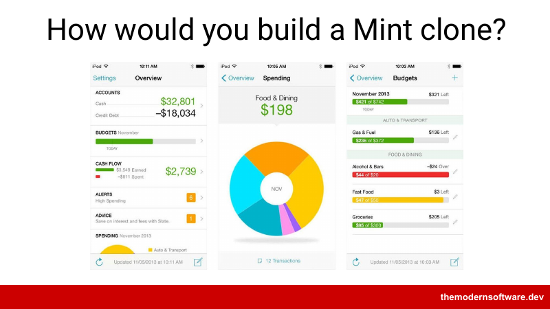
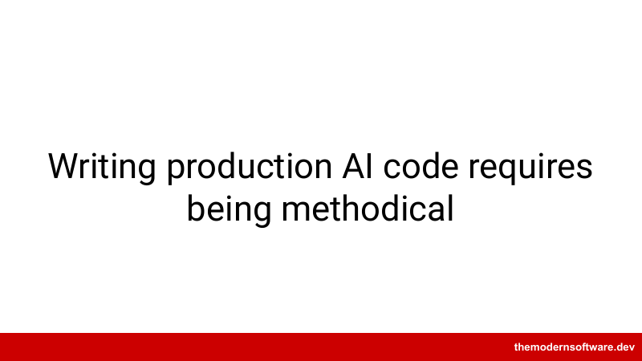
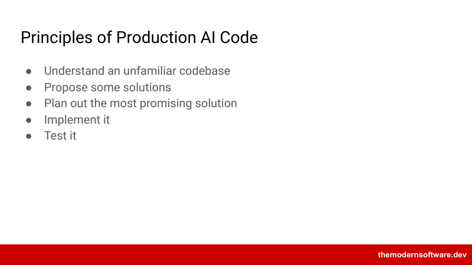
讲者说有人把这门课叫 vibe coding 课，他不希望这样，这门课讲的是使用编码 agent 的系统性原则。思想实验：怎样做一个 Mint 克隆？Mint 是一款消费者记账应用，可以录预算、连信用卡、追踪各类开销，后来被 Intuit 收购，现在也有 Monarch 等同类。再进一步：假设已经有一个完整的 Mint 克隆，要扩展它。要在生产规模上做，就得有条理：先理解一个不是你写的陌生代码库，知道得足以指挥 agent；然后提方案、挑最有希望的、实现、测试。
给一个讲者自己也不懂前端的 vibe coding 应用加趋势线
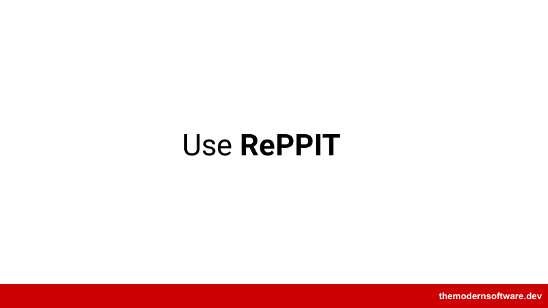
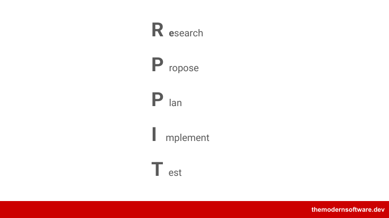
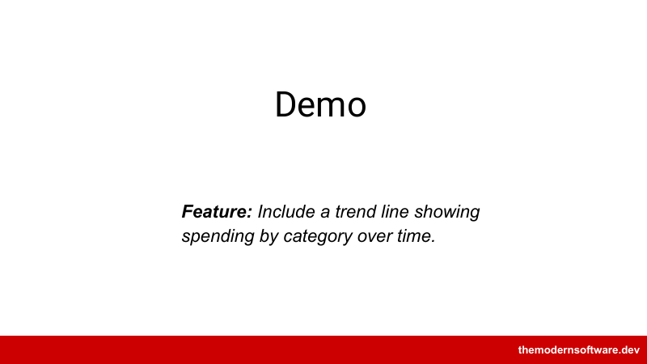
有人会问：做 TDD 不是先写测试再倒推吗？讲者说也可以，他不规定顺序，核心部分相同，只是重新排列；这是他日常工作里常用的框架，他认识的人也用名字不同的类似原则。他坦白这个 Mint 克隆本身是 vibe coding 出来的：他不是前端开发者，只问了一个 Mint 克隆该是什么样子，功能上够用，现在要扩展它。
应用能看异常、上传 CSV，没有信用卡集成；有基础图表、预算上限和按类别的逐行明细（数据是编的），但还没有按类别的趋势线。讲者说他不知道这个应用怎么写的——Vue？不知道——但需要往里贡献，所以用这个框架，逐步展示每一步背后的提示。
研究阶段只记录现在有什么，不提改进
第一步是研究：用关于代码库的有用信息给 agent 的上下文播种，但不喂全部原始代码，而是把代码库提炼成一个精简表示，让 agent 有足够的东西开始提方案。讲者有一个「research codebase」skill，背后是一段提示：研究阶段只负责记录代码库里已有的东西，不负责实现或提方案，任务是写清今天存在的行为契约；提示明确说只记录现状、不提改进。关键是最后的产物：一份结构化的研究文档，描述 agent 对各组件的了解，可能带代码引用；提示里也规定了输出格式。
有学生问这个 skill 是不是测试出来的。讲者说是手写的，大约一年到一年半里迭代出来：从一份文档开始一行一行加，看研究阶段的表现，不喜欢就改；说是 A/B 测试太重，只是很定性的测试。它也提交在团队共享仓库里，其他开发者在用、在测，讲者说这套框架的代码是他们代码库里被审视得最多的部分之一。
他不是每加一行都做正式对比，但会有人说「这里退化了，改一下」。提示里提到 Context7，一个提供第三方最新文档的 MCP 服务器，只关心本地代码可以删掉那行。另有学生问怎样在新仓库里用这些 skill：如果 skill 提交在版本控制里，克隆就自带；也可以打包成插件在组织内分发，或用封装多个 skill 的全局插件。
研究这一步第一次在 agent 里建立对代码库的理解，生成了相当详细的现状文档。这份文档有两个用处：给后续步骤播种，也帮讲者自己理解。他坚持认为我们仍需要对现有代码的心智模型——不必懂到 Terraform 的细节，但要能看出有前端和后端、用了 Vue、后端模型是什么形态，足以分辨好坏；这份文档也是给他自己的参考。
早期的意图与架构，是今天人最有杠杆的位置之一
接下来是 propose。到目前为止只有一份通用的现状文档，和要做的功能无关，现在开始变得有主见。「make proposals」是另一个 skill，功能上很简单：基于代码库的精简表示，为这个功能提出两个不同的方案。可以要三四个，但讲者发现超过两个收益递减。方案建立在研究文档之上，可以把文档拉进来或明确放进上下文；产物不一定要写成文件。
每个方案的重要部分：背景、方案概述、关键改动、取舍、验证、开放问题。讲者说这一步和下一步是用户作为专家最该参与的地方。现场的两个方案：一个在服务端，改上传接口返回多序列；另一个在客户端用已上传的交易，纯前端改动、更轻。为了现场演示少碰后端，他选了方案二；不是演示的话，他会仔细看取舍，由懂产品需求、系统需求和系统限制的技术人员来选。
学生问：项目已经有大量描述结构的 Markdown 文档，是跳过研究让 agent 读文档，还是重做更好？讲者说完全取决于文档质量：维护得好、准确，就复用并调整 skill 以它为起点；但文档常常没人维护，在读坏文档和从头开始之间，他选从头开始，免得 agent 被过时信息搞糊涂。最佳做法是确保过时文档要么不存在、要么被更新。
为什么是两个方案？讲者说主要是经验：借 ML 里 PCA 的比喻，他想要彼此正交的主成分，逼 agent 找出解空间里两个不同的区域，通常足够覆盖、又给他的专业判断留空间；更大的代码库可能要重新考虑。要不要另一个 skill 来选方案？也许，但那就交给了 agent 自己决策。讲者认为今天人最有用的两处是：意图与架构，以及代码审查。
他说这是承认自己仍应在流程早期决定 agent 怎么运行和实现，要把 spec、研究和计划弄清楚，认为这是今天人最有杠杆的位置之一；两年后是否仍然如此很难说。随着 harness 越来越复杂，它们承担了更多这类工作，尤其是规划，Claude 和 Codex 内置的规划能力相当好，他也不总用自己的规划提示，但仍看重统一产物格式。他会公开这些提示，鼓励大家拆开改；以前有位做医疗的学生就按自己的需要扩展了它。这不是一成不变的流程，而是拆解复杂问题的起点。
明确写出不在范围内的东西，防止 agent 跑偏
进入 plan 阶段。讲者鼓励使用编码 agent 内置的规划能力。他的 skill 本质上是：这里有一份设计文档模板，按选定的方案填好。这个格式他容易读，包含他判断方案质量需要的信息：代码库现状、功能与非功能需求、设计决策与取舍、技术设计，还有一些代码层面的细节，他想看到哪些文件在改，几乎像一份 diff。
模板里有一处大写字母，说明是人写的：他要求带行号，几个月前加的，为了把方案落到几乎代码级别。模板还包括测试、要跑哪些测试、可观测性和未来考虑。最有价值的之一是明确写出不在实现范围内的东西：放到未来考虑里，并说「别碰，只做范围内的，其余推迟」，这能防止 agent 跑偏去做无关的工作。还有安全、上线等部分；看布局也有帮助：服务边界好不好，模块化是否合适，数据模型是什么。
学生问怎样验证研究阶段的产物。讲者说他现在对研究阶段的验证比以前少，因为 agent 读代码并提炼的能力已经很好——研究本质上是信息压缩，agent 很擅长，不敢说 100% 可靠，但足够好；他更关心实现。验证也发生在后面的测试里：单元测试、集成测试、冒烟测试是验证方案最有价值的方式之一。如果编码越来越好、实现细节越来越不重要，我们关心的就是输入和输出，必须严格检查输出。
行为契约靠测试；性能、可读性等交给代码审查
讲者说现代开发者的很多时间会花在为输出设定要求上。他的实现提示几乎算不上提示，基本就是「实现这个计划」，讲者自嘲是为了凑出缩写里的 I。Cursor 一边按计划实现，一边隐式地打开浏览器、操作应用、造合成数据并通过 CSV 上传，把实现和测试合成一步；讲者说这在六个月前还做不到。Cursor 等很多 agent 内置这种能力，没有的话可以加 Playwright MCP 一类的服务器，本周晚些时候讲 MCP 时会给选项。
学生问计划阶段的事（实录只记下半句，未确认）。讲者说这里检查的是行为契约：上传 CSV，应该看到新功能。看起来做完了，在普通浏览器里打开也正常。行为契约之外还有性能、质量、可读性等，这些归代码审查，现在常由 agent 驱动、各管一块。他展示了一个简单的代码审查 skill（不一定推荐，只为引起好奇）：检查 diff，输出必须修、建议修、可以考虑三级，像红黄绿。
这个 skill 把安全、性能、风格、一致性和边界情况合在一起；实践中常用四五个 agent 各管一块，在 GitHub 开 PR 时由 action 跑这些 agent，再由一个协调 agent 合并成一份报告。学生接着问：每一步都写文档再开新会话吗？什么时候清上下文？某些步骤需要更强的模型吗？
经常压缩；选定方案后清上下文；前期用强模型
讲者说这些更像艺术，但已有人在研究。他会分享一篇研究 compaction 的博文：何时压缩、对成本的影响、积累多少 token 再压缩。一个结论是 250,000 到 450,000 个 token 之间（视模型而定），大约是他们建议压缩的点；他们还发现 agent 实际用到更多上下文的时候并不多。所以号称 100 万 token 的上下文，按这项研究真正有用的也许接近一半。具体的结论是：经常压缩。（博文本身页面未给出处，未确认）
至于清上下文：讲者说演示里有一处他不推荐——选定方案后通常应该清掉上下文，否则两个方案都留在里面，可能让 agent 搞不清在实现哪个。一般他倾向于清：看到几十万 token 时，把相关信息写进文件，再把这份压缩表示读进一段新上下文。模型选择上：前期（研究、方案、计划）用很强的模型，大部分思考发生在那里；实现乃至测试可以用更轻的模型。
上下文里有用的部分大约是一半到四分之三
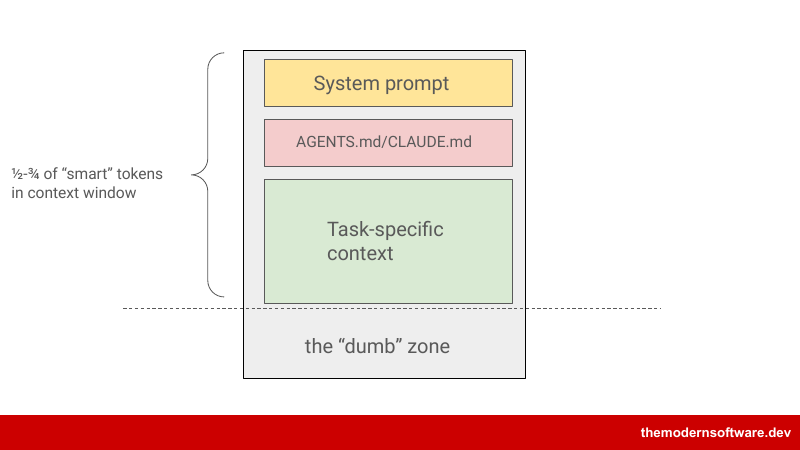
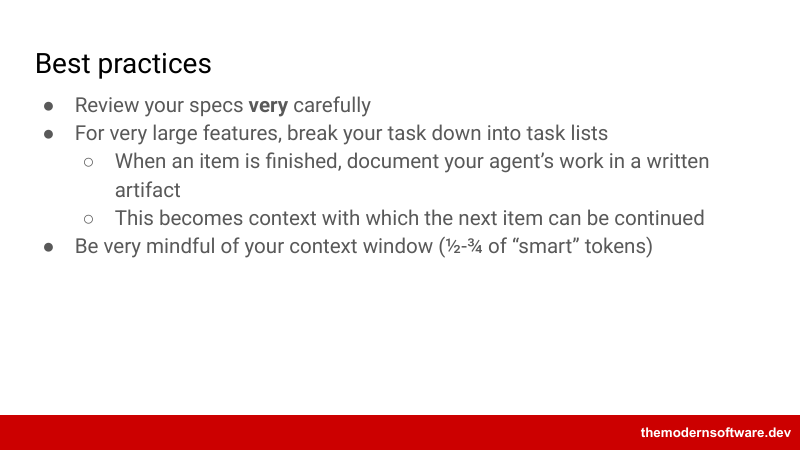
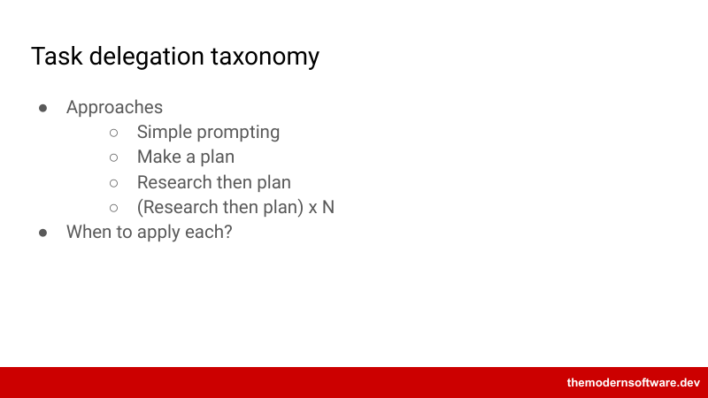
讲者说「smart token」指上下文里有用的部分，相对于没用上或帮倒忙的部分，大约在一半到最多四分之三之间——这更多是大家注意到何时开始出问题的直觉。最重要的最佳实践是审你的 spec，尤其要深度参与研究、方案和计划。还有一个开放问题：什么时候用普通提示、什么时候换重流程？可以简单提示、直接进 Claude 的 plan 模式做一个计划、先研究再计划，或者把研究和计划重复几轮。
小修小改直接聊；大重构要多轮研究、方案、计划和多个会话
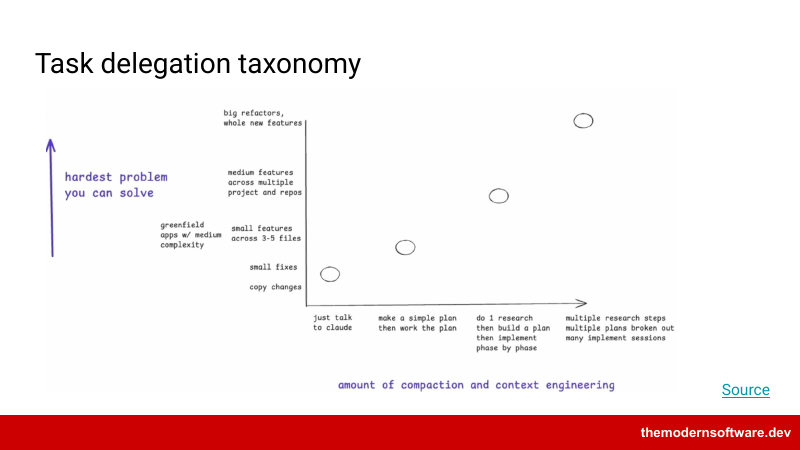
讲者说坐标轴可能随模型变强而移动，但方向上是对的。他演示的流程偏重：花 45 分钟讲提示，只为给一个 web 应用加一个仪表盘功能。复制改动或小修，直接和 Claude 或 Codex 聊就行；跨多个文件的小功能，开始考虑做个计划；中等功能，尤其是大重构或迁移，要多轮研究、方案和计划，用多个会话和 subagent。他日常的大项目会拆成多个 issue，每个 issue 一个 agent，并把 issue 叠起来让 agent 在彼此的工作上继续，这时他会格外用心写 issue 描述。
Superpowers 这个高星仓库本质上就是一组 skill
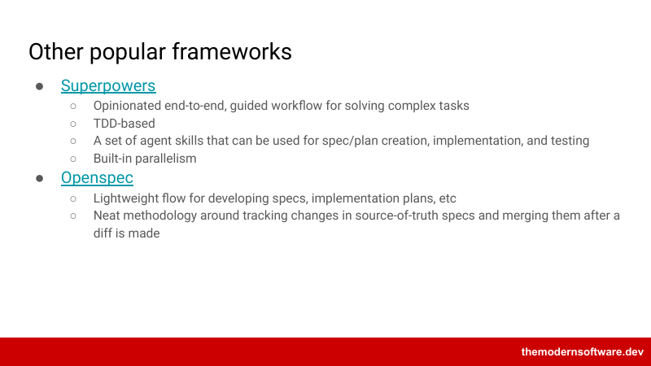
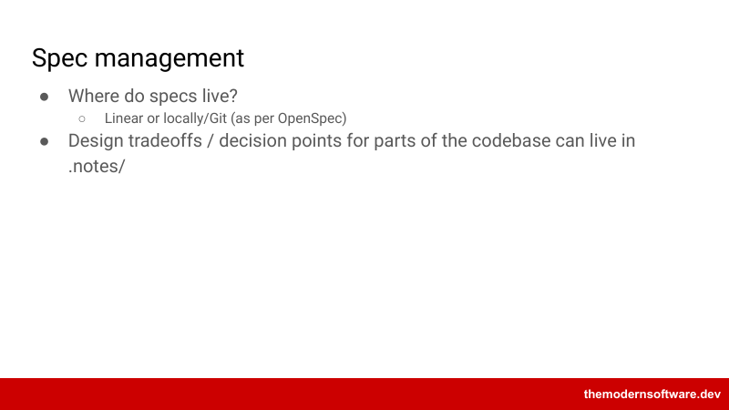
.notes/。实录里讲者没讲到这一页，未确认他的口头说明。最后，讲者介绍几个框架。Superpowers 被他形容为加强版的同类框架，实录里说它有 300,000 颗星，是一套更完整的周密规划、写 spec、与 agent 头脑风暴的方法；OpenSpec 可以从课件里的链接去看。Superpowers 这个仓库的核心只是一组 skill：头脑风暴、写计划、执行计划、代码审查等，正是本讲讲过的东西。之后实录变成课后零碎闲谈，实录自己注明无法可靠辨认，本页不收录。